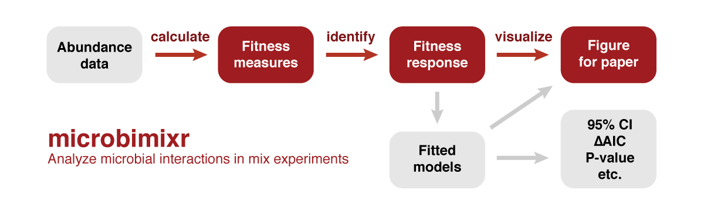
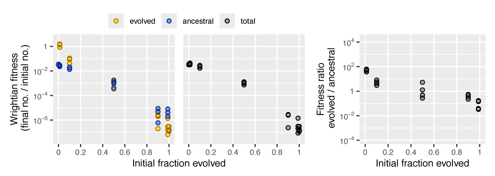

microbimixr is an R package to analyze the fitness effects of microbial interactions. Studies of conflict and cooperation among microbes often use a common experimental design: mix together two strains then measure how their survival and reproduction depend on strain frequency. How do they act differently together than they do on their own?
microbimixr helps you get the most out of this data by providing tools to:
- Calculate best-practice fitness measures
- Identify which fitness measures are best for your data and research question
- Visualize interaction effects as publication-quality figures

There are many ways to quantify microbial survival and reproduction. microbimixr makes it easy to use fitness measures that are:
- Robust and quantitatively comparable across different species and different types of interaction
- Well-suited to statistical analysis of effect sizes and confidence intervals
- Useful for both individual and group-centered approaches to social behavior
- Directly comparable to theoretical models based on kin selection, multilevel selection, or game theory
microbimixr works with most types of microbial abundance data including cell counts, cell density, optical density, and strain frequency.
Example usage
library(microbimixr)
# Calculate fitness measures
fitness_myxo <-
data_smith_2010 |>
calculate_mix_fitness(
var_names = c(
initial_number_A = "initial_cells_evolved",
initial_number_B = "initial_cells_ancestral",
final_number_A = "final_spores_evolved",
final_number_B = "final_spores_ancestral",
name_A = "evolved",
name_B = "ancestral"
),
keep = "exptl_block"
)
head(fitness_myxo)
#> exptl_block name_A name_B initial_fraction_A initial_ratio_A_B
#> 1 2009-04-29 evolved ancestral 1.00000000 Inf
#> 2 2009-04-29 evolved ancestral 0.98901099 90.00000000
#> 3 2009-04-29 evolved ancestral 0.90000000 9.00000000
#> 4 2009-04-29 evolved ancestral 0.50000000 1.00000000
#> 5 2009-04-29 evolved ancestral 0.10000000 0.11111111
#> 6 2009-04-29 evolved ancestral 0.01098901 0.01111111
#> fitness_A fitness_B fitness_total fitness_ratio_A_B
#> 1 1.200000e-07 NA 1.200000e-07 NA
#> 2 1.555556e-07 0.00000400 1.978022e-07 0.03888889
#> 3 2.600000e-06 0.00000480 2.820000e-06 0.54166667
#> 4 4.280000e-04 0.00156000 9.940000e-04 0.27435897
#> 5 4.200000e-02 0.01400000 1.680000e-02 3.00000000
#> 6 8.420000e-01 0.02288889 3.189011e-02 36.78640777
# Compare fitness measures
plot_mix_fitness(fitness_myxo, mix_scale = "fraction")
Install microbimixr
# Install the development version from GitHub:
# install.packages("devtools")
devtools::install_github("matryoshkev/microbimixr", build_vignettes = TRUE)Further reading
- smith j and Inglis RF (2021) Evaluating kin and group selection as tools for quantitative analysis of microbial data. Proceedings B 288:20201657. https://doi.org/10.1098/rspb.2020.1657